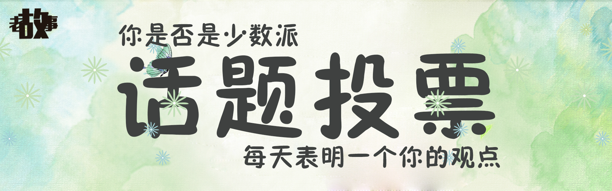

古时
历史上的那些事
旧时
我们祖祖辈辈的故事
童时
我们自己小时候的故事
今时
发生在身边的大事小情
类型
真实
虚拟
地点
北方
南方
东方
西方
国外
时间
古代
近代
现代

从前书信很慢，车马很远，一生只爱一个人。 ————木心《从前慢》
投递
赞和收藏
@
评论和@
联系人
法律版面
小猪佩奇
学生
8年轮
12234@qq.com
北京
音乐
133423423413
家族史
心情
投票
树洞
确定
故事
回忆
消息
我的